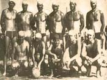
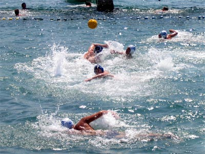
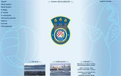

U arhivi se nalaze vijesti, rezultati utakmica i ostale informacije koje su bile objavljene na www.vkcroatia.hr u prethodnim sezonama od kad postoje ove stranice:
Danas sam slučajno tražeći neke slike vezane uz Turanj naletio na sliku i popis igrača Croatie iz generacije 1974. na jednom blogu jako cijenjenom u vaterpolskom svijetu zbog količine i kvalitete podataka o tom sportu.
Radi se o zbirci tekstova iz povijesti vaterpola "Water Polo legends" koja već sad postaje relevantna baza podataka o nastanku i protagonistima vaterpolske igre kroz povijest. S obzirom na to da je danas glavni izvor informacija Internet, uvrštavanje VK Croatie u ovu zbirku klubu sigurno podiže ugled kluba i postaje samo pitanje vremena kad će se naš klub naći u nekoj monografiji o vaterpolu bilo gdje u svijetu.
U ponedjeljak 23. 6. 2008. u 10.30h će se održati prvi trening ove sezone. Treninzi će se tijekom sezone održavati radnim danom u 10.30 i 19.00 h, i subotom u 10.30 h.

Slika sa jedne od prijateljskih utakmica iz prošlih sezona
S početkom sezone klub je dobio i šest novih članova koji će se natjecati u kadetskoj kategoriji, iako bi po godini rođenja mogli igrati i kao mlađi kadeti (1994. godište i mlađi).
Novi članovi su uvijek dobro došli, iako je najbolje ako se prijave na početku sezone da bi se lakše uklopili u ekipu. Novi članovi se mogu javiti treneru preko telefona (098 1656 008) ili jednostavno doći na trening.
18.6.2007.
U ponedjeljak 19. 6. 2007. u 10.30h će se održati prvi trening ove sezone. Treninzi će se tijekom sezone održavati radnim danom u 10.30 i 18.00 h, i subotom u 10.30 h.
Dosadašnji članovi kluba i svi ostali koji se imaju želju pridružiti treninzima su dobrodošli. Novi članovi se mogu prijaviti treneru preko telefona (098 1656 008) ili jednostavno doći na trening.

Stari izgled stranica
18.6.2007.
Nakon tri godine funkcioniranja ove web stranice sa početnim dizajnom odlučio sam da je vrijeme za promjene. Glavni razlog promjene je bio čisto tehničke naravi: kad sam radio stari dizajn tipične rezolucije su bile 800x600 i 1024x768, a nakon tri godine i pojave LCD monitora rezolucije postaju sve veće. Zbog većeg raspoloživog prostora redovi teksta su postajali sve širi i sve teže čitljivi. Osim toga, www.vkcroatia.hr je bio i moj prvi ozbiljni projekt (a nadam se da sam od tad dosta toga naučio) pa je vrijeme da prvi projekt ponovo dobije dostojan dizajn.
12.08.2006.
Napokon su sakupljeni rezultati utakmica ostalih ekipa koje se natječu sa Croatiom, pa smo kompletirali tablice za mlađe juniore i mlađe kadete. Osim toga, na tim stranicama možete pronaći i raspored utakmica (s datumima i terminima).
11.07.2006.
Počela je vaterpolska sezona 2006. VK Croatia se natječe u kategorijama mlađih kadeta i mlađih juniora. Nažalost, kako smo deficitarni s igračima, za klub nastupaju igrači koji su i po nekoliko godina mlađi nego što im to dopušta kategorija pa će se to odraziti na rezultate. Ali će igrači zato steći iskustvo i brže se razviti u konkurenciji starijih ekipa, što znači da loši rezultati ekipe ne znače i loše rezultate za pojedinca. Prioritet kluba je ionako psihofizički razvoj djece i poticanje sportskog duha i ponašanja od djetinjstva.
Mlađi kadeti su sezonu završili na 5. mjestu (1.Brodograditelj, 2.Biograd, 3.Gusar, 4.Zadar, 5.Croatia Turanj). Uzevši u obzir da kategorija mlađih kadeta počinje sa djecom rođenom 1992. godine i kasnije, a u našem klubu nije bilo niti jednog igrača rođenog 1992. (svi 1993-1997.) i da je većina njih (18 od 22) tek ove godine počela trenirati vaterpolo, vidljivo je da ovakav plasman nipošto nije neuspjeh ili gubitak, već veliki dobitak za Croatiu Turanj i vaterpolo općenito. Osnovni cilj uprave kluba je sljedećih godina zadržati sadašnje igrače i okupljati nove članove i generacije, što je u skladu sa dugogodišnjom tradicijom Croatie. To će biti puno lakše kada se napokon izgradi bazen u Zadru, jer će se kontinuitet treninga tako produžiti na cijelu godinu. Uzmemo li u obzir koliko su djeca bila redovita na treninzima ovoga ljeta i neskriveno zadovoljstvo većine roditelja što im djeca treniraju vaterpolo sigurno neće biti teško usmjeriti ovu djecu na pravi put. Upravo bi ova generacija mogla postati i jedna od "najvećih" u povijesti kluba ukoliko se barem djelomično ispune ovi preduvjeti. Ovo je definitivno generacija za budućnost.
Ne radi se samo o tome da se djecu potakne na sportsku aktivnost. Na ovaj način se djeca razvijaju fizički, ali i psihički. Djeca s vremenom stječu radne navike, dobiju osjećaj pripadanja nekoj skupini, poboljšaju se njihove socijalne sposobnosti i samopouzdanje. Osim toga, steknu nove prijatelje i kvalitetnije provode svoje slobodno vrijeme. U današnje vrijeme kada se stalno naglašava važnost sportskih aktivnosti u odgoju djece, roditelji potiču djecu da se bave sportom znajući da će ih tako najbezbolnije sačuvati od današnjih problema odrastanja.
S obzirom na to da je vaterpolo u Turnju omiljen sport sa dugom tradicijom, interes za bavljenjem vaterpolom je velik. Jedina alternativa u Turnju je nogomet, i dio članova VK Croatie Turanj se u zimsko doba bavi nogometom. Osim toga, dio igrača samo ljeti boravi u Turnju, pa se tako i njima omogućava da se bolje uklope u društvo što ih trajno veže za Turanj.
Završena je još jedna sezona III. HVL za mlađe uzraste. Croatia Turanj se natjecala u kategorijama mlađih kadeta i mlađih juniora. Odigrane su i dvije međunarodne prijateljske utakmice sa Bishops-ima iz Južnoafričke Republike i Békéscsabai-em iz Mađarske. Na kraju sezone Croatia Turanj je osvojila 3. mjesto na turniru mlađih juniora u Svetom Filipu i Jakovu, koji je organizirao Zagrebački ZPK.
Mlađi juniori su također prvenstvo završili na posljednjem mijestu (1.Gusar, 2.Zadar, 3.Tisno, 4.Croatia Turanj) sa 1 osvojenim bodom. Glavni razlog tom 4. mjestu je to što je ova generacija ograničena na samo 10-ak igrača i nema mogućnosti selekcije, nego jednostavno moraju igrati svi koji treniraju bez obzira na kvalitetu. Dogodi li se uz to, kao što je bio slučaj ove sezone, da je na nekoliko utakmica zbog bolesti izostalo par igrača zbog čega su na klupi za pričuve sjedili uglavnom mlađi kadeti, ovakav rezultat je razumljiv. Da je upravo to bio glavni razlog nešto lošijim rezultatima najbolje se vidi iz prijateljske utakmice protiv mađarskog Békéscsabaija (7:7) kada je zbog bolesti falio samo jedan igrač. Još je bolji pokazatelj turnir odigran u Svetom Filipu i Jakovu (3 pobjede; osvojeno 3. mjesto) kada su uz kompletnu ekipu mlađih juniora nastupila još dvojica bivših članova,koji ove sezone zbog različitih razloga nisu trenirali, pa je bilo nešto više zamjena. Moglo bi se reći da je sezona spašena upravo osvojenim 3. mjestom na tom turniru u Svetom Filipu i Jakovu na samom kraju sezone.
Završen je turnir u Svetom Filipu i Jakovu koji je trajao od 26-28.8. Na turniru su sudjelovali domaći Gusar, Croatia Turanj, Biograd, Zadar i organizator turnira sa dvije ekipe ZPK I i ZPK II. Ekipe su bile podijeljene u dvije skupine. U prvoj su bili Biograd, Gusar i ZPK II, a u drugoj Croatia Turanj, Zadar i ZPK I. Nakon razigravanja po skupinama u petak 26.8. u prvoj grupi su Gusar (2 pobjede) i ZPK II (1 pobjeda) prošli u polufinale. Iz druge su se grupe u polufinale plasirale ekipe Croatia Turanj (pobjede protiv ZPK I 7:4 i Zadra 11:9) i ZPK I (pobjeda protiv Zadra). U prvom polufinalnom susretu, odigranom u subotu 27.8., Croatia Turanj je poražena od ZPK II 4:11, dok je Gusar slavio protiv ZPK I 13:7.
Posljednji dan turnira, nedjelja 28.8., bio je predviđen za razigravanje za plasman. U prvoj utakmici, koju su trebali odigrati za 5. mjesto Zadar i Biograd, nijedna od te dvije ekipe nije doputovala. U 10:00 sati je odigrana zanimljiva utakmica za 3. mjesto između Croatie Turanj i ZPK I, koji su ranije međusobno već odigrali utakmicu u skupini. Croatia Turanj je pobjedila rezultatom 7:5 i zasluženo osvojila 3. mjesto na ovom turniru. U rezultatski izjednačenom finalu ekipa ZPK II je ipak odigrala taktički nešto zrelije od Gusara i pobjedom od 7:5 osvojila naslov pobjednika turnira.
Na kraju su podjeljene medalje svim igračima i trenerima trima prvoplasiranim ekipama, a zanimljivo je za spomenuti da je pobjednička ekipa ZPK II bila najmlađa (svi ´91 godište), dok su svi ostali bili ´89 i mlađi.
13.8.2005.
U subotu navečer je na bazenu u Turnju odigrana prijateljska utakmica između mlađih juniora Croatie i Békéscsabai-a (grad blizu Szegeda). Ovo je vjerojatno bila najljepša vaterpolska predstava ovog ljeta: sudar mađarske i hrvatske škole vaterpola. Mađari su igrali svoju igru sa puno proplivavanja i mijenjanja pozicija i time prisilili domaćine na presing, dok su naši igrači prikazali klasični pozicijski napad sa igrom na centra ili neočekivane udarce s vanjskih pozicija. Utakmica je završila rezultatom 7:7 i tokom utakmice je bilo vidljivo kako gosti imaju puno više iskustva (u Madžarskoj se igra juniorska liga tijekom zimskih mjeseci i traje puno duže od naše ljetne lige). Zanimljivo je da gostujućim igračima trener izrazito malo dovikuje tijekom igre i da su napadi u stilu zemlje iz koje dolaze: neobični i sa puno izmjene pozicija. Mlađi juniori Croatie su pokazali kako se rad tokom ovoga ljeta isplatio i odigrali odličnu utakmicu punu ritma, i iako su se plivački teško nosili s gostima koji su im bježali u kontranapade, pokazali su da će slijedeće sezone njihovi talenti isplivati na vrh junirske lige.
13.7.2005.
Na prvoj juniorskoj utakmici ove sezone opet se pokazala neučinkovitost i nemoć HVS-a i njegovih predstavnika da omogući ujednačeni i objektivni kriterij suđenja. Nažalost, događa se ista priča kao i nekoliko prošlih sezona: osobno neslaganje jednog suca sa vodstvom kluba Croatia Turanj se reflektira na utakmicama za koje ždrijeb odredi kao suca Igora Rogića iz Zadra.
Na današnjoj utakmici taj sudac je u drugoj minuti zbog prvog prigovora na suđenje isključio igrača Croatie, što nikako nije u skladu sa ujednačenim kriterijem suđenja na koji smo navikli. Ako se kruto držimo pravila onda je istina da se isključenje s pravom zamjene dosuđuje za prigovor igrača na sudačku odluku, ali ustaljeni kriterij je takav da se igrača prvi put usmeno opomene ili se dosudi obično isključenje, a zatim se ako isti igrač i dalje ustraje u reagiranju na sudačke odluke dosudi isključenje sa pravom zamjene. Nedugo nakon toga je i trener Croatie dobio crveni karton od istog suca, koji se u tom trenutku nalazio na strani bazena koja je nasuprot klupe (dakle zbog prigovora na kojeg drugi, bliži sudac nije reagirao). Da ne duljimo već viđenu i prožvakanu priču, bilo je još dvojbenih odluka a sudac Rogić je većinu suđenja preuzeo na sebe. Vidjeli smo nekonvencionalni način suđenja u kojem je sudac Rogić dosuđivao prekršaje i na području koje obično pokriva drugi sudac, a i dva-tri prekršaja u kojima on nedvojbeno nije bio u poziciji s koje se dobro vidi situacija u bazenu. Drugi sudac, zapravo sutkinja, je sasvim dobro obavila svoj dio posla iako se ni kriva ni dužna našla u dominiranom položaju u kojem je njezin dio posla opet odrađivao sudac Rogić. Čak je u jednoj situaciji i poništila odluku suca Rogića u situaciji koja se dogodila sasvim na njezinom krilu.
Sve u svemu, ponašanje suca Rogića je bilo apsolutno nekorektno i na kraju je degradiralo inače vrlo korektnu utakmicu. Čak nije ni problem u jednom porazu, koliko u tome da se mladim igračima jedna sportska priredba zbog nečije vendette pretvorila u nešto sasvim drugo. To je sve već viđeno u nekoliko prethodnih sezona, ali predstavnici HVS-a jednostavno ne mogu ili ne žele poduzeti ništa da se situacija promijeni jer je riječ o mladom sucu sa relativno kratkim sudačkim stažom.
Osim suđenja utakmica se odigrala u sasvim korektnoj atmosferi između igrača, bez ikakvih grubosti i napetosti i završila je rezultatom 11:6 u korist Tisna. Vaterpolisti Tisna su se u početnom prepucavanju sa sucem bolje snašli i iskoristili grč igrača Croatie koji su se trgnuli tek u trećoj četvrtini. Na utakmici se posebno istaknuo igrač Tisna s brojem 10 (nažalost ne znam mu ime), koji je većinu utakmice proveo na poziciji sidruna, a u zadnjoj četvrtini se je pod pritiskom naše obrane povlačio i na vanjske pozicije. Na poziciji sidruna je bio jednostavno nezaustavljiv za naše bekove, pa su vanjski igrači morali priskakati u pomoć. Ukupno je postigao 10 od 11 golova Tisna, što samo govori o njegovoj sposobnosti u igri. U drugom poluvremenu je ekipa Croatie, prvenstveno zahvaljujući uskoj zoni koju su igrali, počela sustizati rezultat ali već je bilo kasno za tijesnu završnicu ili preokret.
12.7.2005.
Utakmicom između mlađih kadeta Croatie i Biograda započela je službena vaterposka sezona u Turnju. Ova utakmica je bila svojevrsno vatreno krštenje za veliku većinu naših mlađih kadeta, što je bilo vidljivo u utakmici (a i u rezultatu 20:4 u korist Biograda). Tokom utakmice je bilo vidljivo neiskustvo igrača koji su ove sezone napravilii prve korake u vaterpolu. Ali u svakom slučaju veseli to što ove sezone imamo veliki broj igrača, tako da će ova ekipa sigurno moći boriti za prvo mjesto u skupini. Biograd se bolje snašao od samog početka utakmice i odličnim plivanjem stvarao višak igrača na vanjskim pozicijama, tako da su lako dolazili u gol prilike. Ako pogledamo igrače, niti jedan (iz obe ekipe) nije se istaknuo klasom, tako da će uzvrat u Biogradu (2.8.2005.) sigurno biti neizvjesniji i nadamo se da će završiti pobjedom Croatie.
29.6.2005.
U srijedu 29.6. je odigrana utakmica sa klubom Bishops iz Cape Towna u Južnoafričkoj Republici. Radi se o klubu koji se većinom sastoji od učenika srednje škole Diocesan college u Cape Townu. Oni su ovo ljeto odlučili doći u Hrvatsku (provest će 13 dana), i obići vaterpolske centre.
Za Hrvatsku su se odlučili na inicijativu reprezentativnog izbornika JAR-a koji je, naravno, iz Hrvatske. Nakon dva dana u Zagrebu i treninga sa Medvešćakom jučer su na novom bazenu odigrali utakmicu sa Zadrom. Nakon zajedničkog treninga i revijalne utakmice u Turnju Bishopsi su nastavili putovanje za Šibenik, a planiraju posjetiti još Split i Dubrovnik.
Za Turanj su saznali upravo preko ove web stranice, pretražujući na Internetu dok su ove zime planirali putovanje. Osim sa Interneta, za Turanj su čuli i u stručnim vaterpolo krugovima u Zadru i Zagrebu, a današnjom utakmicom su bili vrlo zadovoljni. Posebno im se svidio način na koji smo vodili utakmicu, a na koji oni nisu navikli. Njihov način rada je takav da trener vodi ekipu i kroz najmanje detalje, dok su kod nas vidjeli kako funkcionira samostalna ekipa kojoj trener samo ukazuje na neke detalje u toku utakmice. U JAR-u vaterpolo postaje sve popularniji i sve veći broj plivača prelazi u vaterpoliste, pa su treneri vaterpola tamo vrlo traženi i cijenjeni. Za tamošnje klubove postaje pitanje prestiža da imaju trenera iz Hrvatske ili Madžarske, država za koje se smatra da imaju najbolju školu vaterpola u svijetu. Fotografije sa prijateljske utakmice možete pronaći u foto galeriji.
28.6.2005.
U srijedu 29.6. na gostovanje u Turanj dolazi klub iz Južnoafričke republike s kojim će naša ekipa ujutro u 9.30 sati održati zajednički trening, a u popodnevnim satima će se odigrati i prijateljska utakmica. Radi se o klubu koji je ovo ljeto odlučio posjetiti Hrvatsku kao jednu od svjetski poznatih država u svijetu vaterpola, a očito je da je i hrvatska škola vaterpola svjetski priznata i poznata.
28.6.2005.
U utorak 28.6.2005. održan je sastanak predstavnika klubova Betine, Biograda, Tisna, Croatie iz Turnja i Zadra na kojemu je okvirno dogovoreno natjecanje za predstojeću sezonu. Za sada je, s obzirom na odaziv igrača na prvi trening predvođeno da se Croatia natječe u kategorijama mlađih juniora i mlađih kadeta. Još uvijek je moguće i da će se okupiti ekipa juniora, ovisno o interesu igrača. Vjerojatno će natjecateljski dio sezone početi 11.7.2005. (kada bi se trebalo odigrati prvo kolo), ali točni datumi još nisu dogovoreni.
Veliko je (i pozitivno) iznenađenje što se na prvom treningu pojavo veliki broj najmlađih igrača. Zbog toga će uprava kluba s radošću na početku sezone organizirati školu plivanja i početnu školu vaterpola, pa pozivamo sve ostale koji su zainteresirani da njihova djeca nauče pravilno plivati i osnove vaterpola da se jave Đoniju Roti (GSM: 091 5106 176).
16.8.2004.
U utorak 17.8.2004. odigrat će se revijalna utakmica starijih igrača Croatie protiv ekipe mlađih juniora. Utakmica će se odigrati pod reflektorima u 21 sat. Ako netko od starijih igrača želi sudjelovati u utakmici neka se slobodno javi Đoniju Roti na 091 5106 176.
15.8.2004.
Odigrano je zadnje 10. kolo III. HVL, skupina Šibenik. Ekipa Croatie Turanj je ostvarila samo jednu pobjedu i završila sezonu kao zadnja na ljestvici. S obzirom na to da je ovo tek prva sezona seniorskog natjecanja i na mali budžet cijelog kluba, što je onemogućilo dovođenje pojačanja, sezona je ipak bila dobra. U seniorskoj ekipi je bila vidljiva potreba za barem još jednim centrom, dok su se vanjske pozicije relativno uspješno pokrivale juniorima (što je sigurno pohvalna strategija uprave - svrha postojanja kluba i jest u tome da mladi domaći igrači igraju što je moguće više). Jedino su na posljednje tri utamice dovedena pojačanja (zbog ozljeda i izostanaka naših igrača, ali i ta pojačanja su zapravo sve bivši igrači Croatie). Ako se ekipa održi i za slijedeću sezonu, a vjerojatno hoće jer je u ekipi unatoč porazima atmosfera bila dobra kroz cijelu sezonu, bolji uspjeh sigurno neće izostati. Uglavnom cjelokupna klupska sezona može biti smatrana uspjehom unatoč tome što je u okolnim klubovima vidljiv pad zanimanja i manjak konkurencije. Mlađi juniori, koji su se ove sezone natjecali samo sa Zadarskim juniorima i ženskom ekipom Gusara koja je izvan konkurencije, su ipak odigrali svoj dio na seniorskim utakmicama i tako stekli još više iskustva. Sezona vaterpola u Turnju zapravo još nije gotova jer se još mora odigrati nastavak prekinute utakmice mlađih juniora s Gusarom, a odigrat će se i revijalna utakmica u spomen na palog hrvatskog branitelja Danijela Mandića koji je bio član Croatie.
1.8.2004.
Nakon gostujućeg poraza u Tisnome seniori Croatie Turanj su pali na posljednje mjesto na ljestvici III. HVL skupina Šibenik. Utakmica je završila rezultatom 14:2 za domaćine.
30.7.2004.
Seniori Croatie Turanj su potopljeni na najtežem gostovanju lige. Ekipa Gusara je uvjerljivo najjača i zasad ima savršen učinak: svih 5 pobjeda i gol razliku od 74:23. Po dosad prikazanome oni su glavni kandiati za prvaka III. HVL skupine Šibenik.
25.7.2004.
Usprkos kiši i prijetećem nevremenu odigrana je utakmica između Croatie Turanj i Brodarice. Utakmica je završila pobjedom gostiju od 6:2. Unatoč prohladnom vremenu i burinu gosti su bolje otvorili utakmicu i odmah poveli (čak su zabili i autogol), a prednost su održavali tako da su kroz veći dio utakmice u obrani igrali M-zonu i koristili loš dan naših vanjskih pucača. Naš jedini gol postigao je kapetan Goran Jakov Matulj iz četverca.
23.7.2004.
Utakmica protiv Primoštena je završila s rezultatom 14:5 za gostujuću momčad koja je od samog početka pokazala dominaciju i u obrani i u napadu. Prevagu je donijelo nekoliko lako izgubljenih lopti naših igrača u prvoj četvrtini preko kojih su gosti i poveli. Nakon toga je u Croatiji pala motivacija i momčad Primoštena ih je odlično zatvorila čvrstim presingom koji je pred kraj napada prelazio u zonu. Iako je gostujuća momčad pokazala malo bolju fizičku pripremljenost presudio je nedovoljno čvrst pristup naših igrača, koji su zapravo podjednako kvalitetna momčad.
21.7.2004.
U gostujućoj utakmici mlađih juniora protiv Zadra 1952 naša je momčad izgubila sa rezultatom 22:3. Plivački puno spremniji domaćini lako su do poluvremena stekli prednost od 15:0, golove postižući uglavnom iz kontranapada i tako su osigurali mirnu završnicu utakmice. U našoj momčadi najbolji pojedinac bio je Goran-Jakov Matulj (sa 3 postignuta gola), dok su u momčadi Zadra po 4 gola postigli kapetan Igor Šarić, Ante-Leo Čatlak, P. Marčinković i Marino Srzentić. U utakmici je presudila fizička prpremljenost Zadrana koji imaju treninge tijekom cijele godine.
20.7.2004.
Odigrana je zaostala utakmica prvog kola III. HVL za seniore, koja je trebala biti odigrana 16.7.2004., između Croatie Turanj i Tisna. Domaćini su svladali Tisno sa 7:5. Iako se to ne vidi iz rezultata Croatia je odlično počela utakmicu i uvjerljivo povela (već na poluvremenu je bilo 4:0). U treću četvrtinu su ušli mirno i na predah otišli sa 6:1. U zadnjoj četvrtini su se domaći igrači malo opustili, a u igru su ušli i mlađi igrači i tako utakmicu priveli kraju. Nakon kompletirane tablice i dva odigrana kola Croatia ima 2 boda, i uz lošu gol razliku ipak stoji solidno na tablici u kojoj četiri kluba imaju po dva boda.
18.7.2004.
Seniori Croatie su u svojoj prvoj utakmici III. lige izgubili od ZPK s rezultatom 15:2. Zagrepčani su veliku većinu svojih golova postigli iz kontre i polukontre,i koristeći činjenicu da oni jedini u skupini imaju treninge tijekom cijele godine. U našoj momčadi je uvjerljivo najbolji bio golman zahvaljujući kojemu rezultatska razlika nije bila još veća. Tijekom cijele utakmice je bilo vidljivo da je ZPK mnogo spremnija i kompletnija ekipa, dok naša ekipa još nije potpuno uigrana i postavljena. Naši su isprobavali nekoliko rješenja na poziciji centra i beka, i iako nisu pokazali neku dobru igru ostaje dojam da će slijedeće utakmice donijeti bolje rezultate.
14.7.2004.
Utakmica između mlađih juniora Croatie Turanj i ženske ekipe Gusarica iz Sv. Filipa i Jakova završila je neriješeno 7:7. U prvom dijelu utakmice Gusarice su bile uspješnije i na poluvremenu su imale 2 gola prednosti, ali naša ekipa se u nastavku trgnula i nadoknadila zaostatak unatoč tome što su pred kraj Gusarice imale i jedan četverac. Za Gusarice su sve golove postigle dvije igračice: Andrea Brzić (3) i Morena Galešić (4), dok je kod nas najefikasniji bio Goran Matulj sa 3 gola, a po jedan gol su postigli Marko Mandić, te Filip i Toni Santini.
1.7.2004.
Internet stranice vaterpolo kluba Croatia Turanj su 1.7.2004. napokon postale dostupne nakon što je CARNet registrirao domenu vkcroatia.hr. Od sad na www.vkcroatia.hr možete saznati sve o klubu, utakmicama, igračima i svemu što ima veze sa klubom.
28.6.2004.
U ponedjeljak su počeli treninzi za mlađe kategorije vk Croatie Turanj. Ždrijeb za raspored utakmica u kategoriji mlađih juniora će se održati u nedjelju 4.7.2004. u Turnju. Još se točno ne zna koji će sve klubovi prijaviti ekipu u kategoriji mlađih juniora. Raspored će biti objavljen na www.vkcroatia.hr.